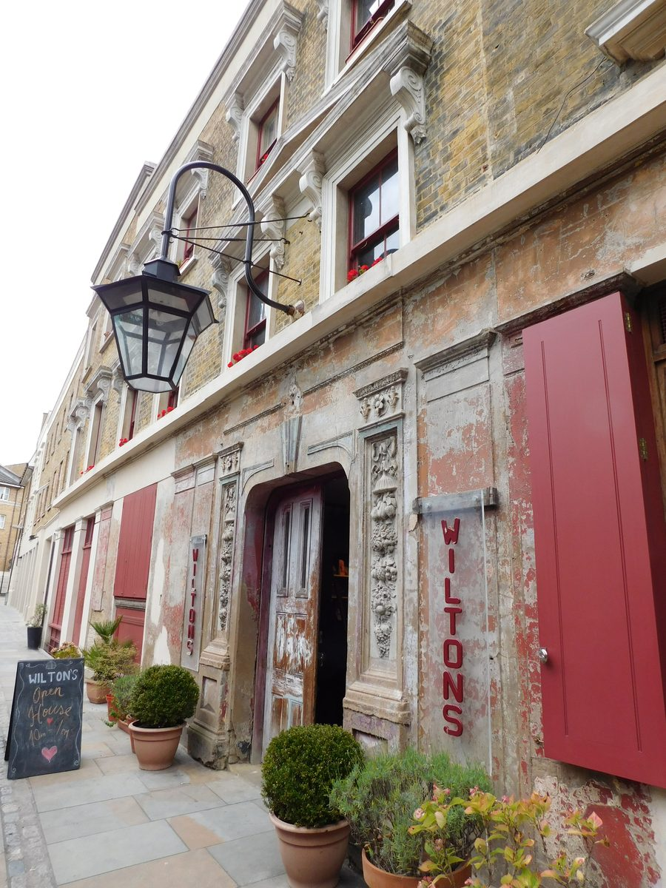

Wilton’s Music Hall
1 Graces Alley, London E1 8JB

About the Hall
Wilton’s Music Hall describes the building as “the most important surviving early music hall to be seen anywhere”, of outstanding architectural and archaeological significance. John Wilton built the hall in 1859 behind the row of buildings on Graces Alley, with the ambition of providing “West End glamour, comfort and first-rate entertainment for East End working people”. Following a policy of conservative repair, the restoration project was completed in September 2015, when the building became structurally sound for the first time since the renovations of music hall days.
Find Us
Nearest Stations
The closest tube stations are Tower Hill and Aldgate East (both Zone 1) and Shadwell (Zone 2, London Overground/DLR); the closest rail station is Fenchurch Street. Full step-by-step walking directions from each station are given on Wilton’s own website, linked below.
Getting Here
Full travel and access information is available on Wilton’s Music Hall’s own website:
Getting here / access informationAttendance
There is no conference fee, and places are strictly limited. To reserve a place, please email:
d.j.grey@herts.ac.uk